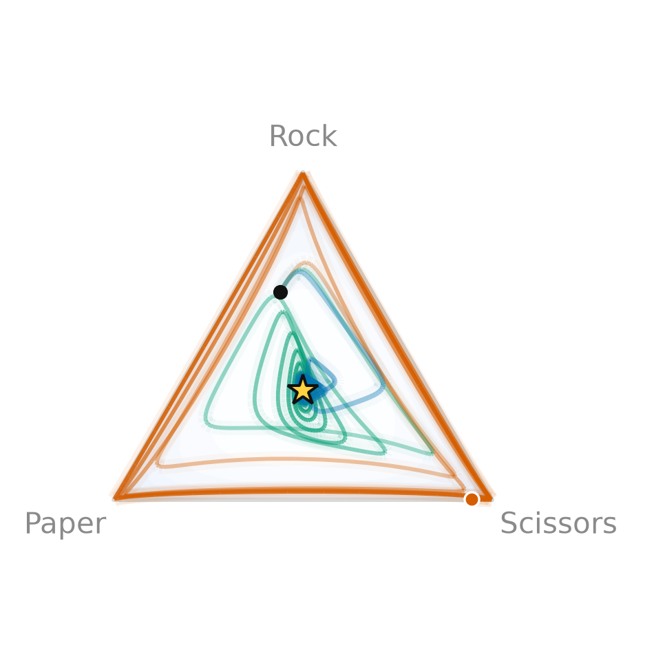
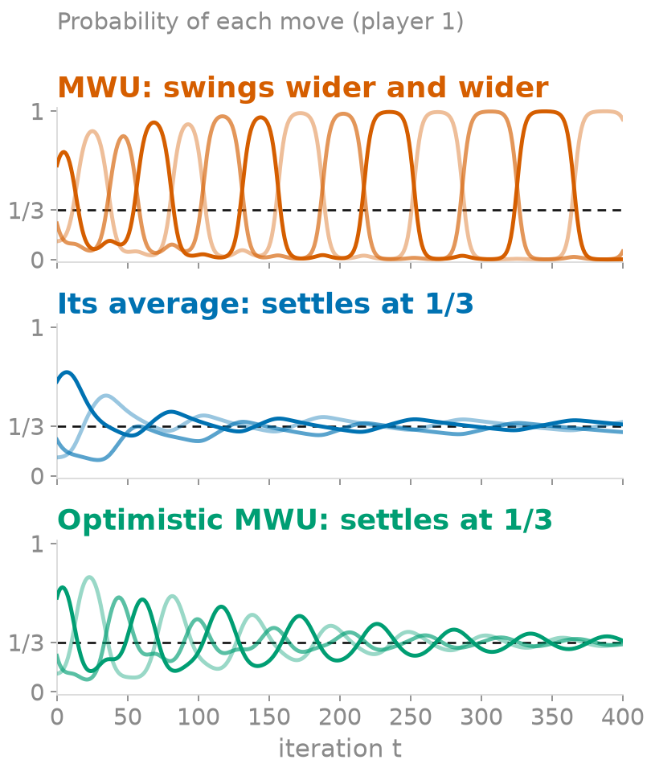

Never settling, yet always fair: Multiplicative Weights in Rock-Paper-Scissors
The setting, in plain words
Think of rock-paper-scissors. If you always play rock, I will soon notice and play paper. The only way not to be beaten is to mix your moves unpredictably, one third each. Then nothing I do can give me an edge. Such a pair of strategies, where neither player gains by changing their own on their own, is called a Nash equilibrium. Here it is unique: both players play (1/3, 1/3, 1/3).
Why care? Because more and more decisions are made by algorithms that learn by playing against each other: pricing bots, bidders in ad auctions, trading agents, the two networks of a GAN. When everybody keeps adapting to everybody, does the behaviour calm down at the equilibrium, go round in circles, or blow up? Rock-paper-scissors is the smallest example where the answer is not obvious.
The learning rule studied here, Multiplicative Weights (MWU, also called Hedge), is one of the simplest: keep a weight for each move, and after every round boost the moves that would have done well against what the opponent just did. A move's payoff is the score it would have earned (+1 for a win, 0 for a draw, −1 for a loss, averaged over the opponent's current mix). The boost is a multiplication by exp(η · payoff): a good move gets more weight, a bad one less, weights stay positive, and the effect compounds from round to round. The number η, the learning rate, says how strongly to react. Finally the weights are rescaled to sum to 1, so they read as probabilities.
But isn't the answer obvious?
Yes: in rock-paper-scissors everybody knows the equilibrium, and playing uniformly at random reaches it on the very first move. That is exactly why it makes a good test tube: we know the right answer, so we can check whether a learner finds it. The real question is not “what is the equilibrium of this game?” but “what happens when players who do not know the game, only what they just earned, adapt to one another?”
Playing uniformly is also passive. It guarantees you break even against anyone, and it never profits from an opponent's habits. MWU needs no knowledge of the game or of the opponent, and in the long run it does almost as well as the best single move in hindsight, whatever the opponent does: against someone who favours rock it learns to play paper and wins (figure below), and it cannot be exploited much by a clever opponent either.
Real games are not rock-paper-scissors. The payoff table may be astronomically large (poker), unknown (markets, auctions), or the “moves” may be the weights of a neural network (the two networks of a GAN). Nobody can write the equilibrium down; algorithms of this family, which minimise regret, are how equilibria are approached from payoffs alone (poker programs use counterfactual regret minimisation, boosting is MWU in disguise).
Then how they converge matters. In a real system, what runs is the current strategy, not an average of past ones: a generator network, a trading agent's present policy. Averaging is easy on a table of probabilities and often impossible on a neural network. So the question is whether the last iterate settles, and how many rounds that costs. Plain MWU's does not, which is why the optimistic variant (used to train GANs by Daskalakis et al., 2018) is interesting. Even for the average, optimism helps: after 20,000 rounds with η = 0.1, the average of the optimistic iterates is about ten times closer to equilibrium than the average of plain MWU (0.001 against 0.012, one run).

Back to the question: do two MWU players end up at Nash?
Plain MWU does not. The strategy spirals away from the centre, towards the edge of the triangle: the KL divergence to Nash (a measure of distance between two probability vectors) grows at every step (Bailey & Piliouras, 2018). In the run below it goes from 0.63 to 5.0 in 400 rounds, and one player ends up playing scissors 94% of the time. The average does. Each player's regret (how much they lose compared with the best fixed move in hindsight) grows slowly, so the time-averaged strategies form an approximate equilibrium, with a guaranteed error of order η + 1/(ηT): in our run it is within 0.03 of (1/3, 1/3, 1/3) after 400 rounds.
Optimistic MWU does too, and without averaging. Counting the latest payoff twice, with the update 2gt − gt−1 (where gt is the payoff vector at round t), makes the strategy itself converge to Nash for a small enough step size (Daskalakis & Panageas, 2019): here the KL divergence falls from 0.63 to 0.003.


Left: player 1's strategy on the triangle. Right: the probability of each of its three moves over time (dashed: 1/3). The animation runs the same dynamics in your browser (same start as the figure). A small η gives a slow, wide spiral; a large η makes plain MWU hit the edge sooner. Optimistic MWU is only guaranteed to converge for η small enough: I checked η ≤ 0.2 numerically and did not check larger values.
References
- J. P. Bailey and G. Piliouras. Multiplicative Weights Update in Zero-Sum Games. ACM EC 2018.
- C. Daskalakis and I. Panageas. Last-Iterate Convergence: Zero-Sum Games and Constrained Min-Max Optimization. ITCS 2019.
- C. Daskalakis, A. Ilyas, V. Syrgkanis and H. Zeng. Training GANs with Optimism. ICLR 2018.
- Y. Freund and R. Schapire. A Decision-Theoretic Generalization of On-Line Learning and an Application to Boosting. JCSS 1997.
- S. Arora, E. Hazan and S. Kale. The Multiplicative Weights Update Method: a Meta-Algorithm and Applications. Theory of Computing 2012.
- M. Zinkevich, M. Johanson, M. Bowling and C. Piccione. Regret Minimization in Games with Incomplete Information. NeurIPS 2007.
![[Tweet image]](tweet.png){kind=link}